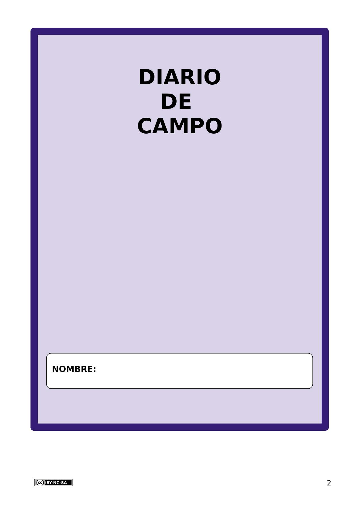
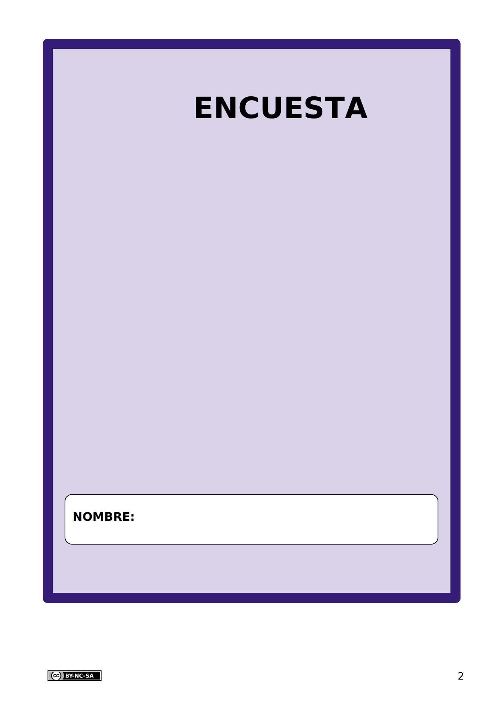
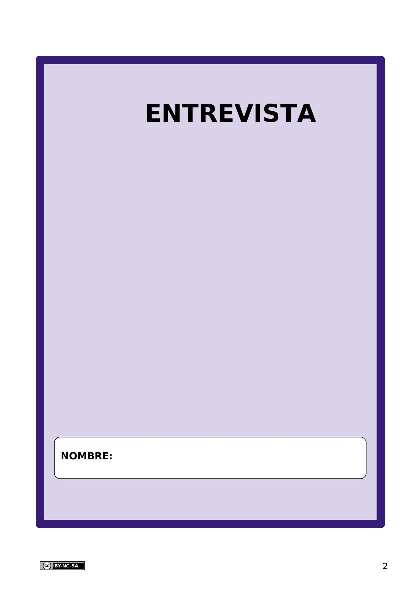

Gracias a la encuesta descubrimos las dificultades de la población.
Diario de campo
Definición:
Cuaderno pequeño y fácil de transportar. Sirve para tomar notas y registrar observaciones.
Ejemplo:
Durante la excursión al jardín botánico usamos un diario de campo hecho con material reciclado. En el diario guardamos diferentes tipos de hojas.
Encuesta
Definición:
Serie de preguntas que se hace a muchas personas para reunir datos o para saber la opinión pública sobre un asunto determinado.
Ejemplo:
Rellenamos una encuesta para conocer nuestras aficiones y actividades en el tiempo libre.
Entrevista
Definición:
Diálogo que mediante preguntas se obtiene información sobre un tema o persona.
Ejemplo:
Realizamos una entrevista a una persona experta para que nos ayudara con sus consejos.
Intereses
Definición:
Preferencia hacia una persona, objeto o situación.
Ejemplo:
Juan dijo que sus intereses estaban relacionados con la lectura.
Investigar
Definición:
Estudiar un tema en profundidad.
Ejemplo:
Pedro sabe mucho de ese tema porque lo ha investigado a fondo.
Para poder crear una empresa con éxito es de gran ayuda investigar la zona donde la vas a crear para encontrar los productos con más demanda, acercarte a las personas que viven en ella para descubrir sus intereses y obtener toda aquella información que nos pueda interesar. Por todo esto, te proponemos que en esta fase elabores una investigación de mercado.
¿Te atreves a convertirte en un investigador?
Definición:
Estudiar un tema en profundidad.
Ejemplo:
Pedro sabe mucho de ese tema porque lo ha investigado a fondo.
Definición:
Preferencia hacia una persona, objeto o situación.
Ejemplo:
Juan dijo que sus intereses estaban relacionados con la lectura.
Definición:
Encontrar algo.
Ejemplo:
Gracias a la encuesta descubrimos las dificultades de la población.
Pedro sabe mucho de ese tema porque lo ha investigado a fondo.
Definición:
Encontrar algo.
Ejemplo:
Gracias a la encuesta descubrimos las dificultades de la población.
Definición:
Preferencia hacia una persona, objeto o situación.
Ejemplo:
Juan dijo que sus intereses estaban relacionados con la lectura.
1. Fases de una investigación
Antes de comenzar a realizar el estudio de mercado es necesario recordar las distintas fases de una investigación. Observa y lee la siguiente infografía.
Lectura facilitada
Las fases de una investigación son necesarias para un estudio de mercado.
Recuerda con la siguiente infografía las fases de una investigación.
Observa y lee la siguiente infografía.
Kardia dice Los sectores económicos
¿Recuerdas qué son los sectores económicos?
Aquí tienes un resumen muy completo. Descárgatelo y úsalo en cualquier momento que lo necesites.
Realiza un estudio de mercado basándote en las fases de una investigación y recauda la información necesaria para crear un empresa con éxito en tu entorno.
Para esta tarea, trabajarás en grupo de 4 o 5 miembros de la siguiente manera:
Cada miembro del equipo tiene su plantilla para completar.
Todos los miembros se sientan alrededor de una mesa.
Antes de completar una actividad se deben colocar todos los lápices en el centro de la mesa para debatir y consensuar la respuesta entre todos los miembros.
Luego, cada miembro realiza la actividad en su plantilla.
Ya estás preparado para empezar tu estudio de mercado, lo primero que debes hacer es descargar e imprimir a doble cara la siguiente plantilla.
Lectura facilitada
Realiza un estudio de mercado basado en las fases de una investigación. También, recauda la información necesaria para crear un empresa con éxito en tu entorno. Para esta tarea, trabajarás en grupo de 4 o 5 miembros de la siguiente manera:
Cada miembro del equipo tiene su plantilla para completar.
Todos los miembros se sientan alrededor de una mesa.
Antes de completar una actividad los miembros del grupo deben colocar todos los lápices en el centro de la mesa.
Todos los miembros del grupo debaten y consensúan la respuesta.
Al final, cada miembro realiza la actividad en su plantilla.
Ya estás preparado para empezar tu estudio de mercado. Para empezar descarga e imprime a doble cara la siguiente plantilla.
Ya conoces qué reto te proponemos alcanzar y te acabamos de plantear una actividad que te acercará a la meta. Pero para tener éxito en tu camino, necesitarás algunas estrategias que te servirán para esta y otras tareas parecidas. Las irás descubriendo en un diario que llamamos tu Diario de Aprendizaje.
En esta ocasión te proponemos que lo abras y completes el PASO 1 del Diario de aprendizaje antes de empezar la actividad que acabas de leer!
Haz clic aquí para descargar tu Diario de Aprendizaje
Recuerda: Pregunta a tu profesor o profesora si la rellenarás en papel o en el ordenador.
Si la rellenas en el ordenador, ¡no te olvides de guardarla bien cuando la termines!
¡Ánimo, que lo harás genial!
4. ¿Seré capaz de hacer la actividad?
¡Ya has empezado la actividad “Un estudio de mercado”! Los comienzos pueden crearte miedos e inseguridades.
Si completas el PASO 2 del Diario de aprendizaje (¿Seré capaz de hacerlo?) podrás ver que tus sentimientos son habituales cuando empezamos una tarea y reflexionar sobre ello te ayudará a continuar con la actividad y completarla con éxito.
Recuerda:
Pregunta a tu profesor o profesora si la rellenarás en papel o en el ordenador.
Si la rellenas en el ordenador, ¡no te olvides de guardarla en tu ordenador cuando la termines!
¡Ánimo, que lo harás genial!
5. Primero. Define el problema y especifica una hipótesis
Debate junto a tus compañeros y compañeras de equipo las necesidades que encontráis en vuestro entorno en relación a los sectores económicos y qué tipo de comercio o producto haría falta.
Aquí puedes encontrar los principios para poder debatir bien.
Anota en la plantilla para hacer un estudio de mercado las respuestas consensuadas de los apartados 1 y 2 de la página 2.
Lectura facilitada
Debate junto a tus compañeros y compañeras de equipo las necesidades encontradas en vuestro entorno. Las necesidades deben ser relacionadas con los sectores económicos. Determina junto a tus compañeros y compañeras qué tipo de comercio o producto es necesario en tu entorno. Aquí puedes encontrar los principios para debatir bien. Anota en la plantilla para hacer un estudio de mercado las respuestas consensuadas de los apartados 1 y 2 de la página 2.
6. Segundo. Desarrolla un plan
Ahora, junto a tu grupo debéis decidir qué plan desarrollar para llevar a cabo la investigación y anotarlo en la plantilla.
Existen diferentes formas de obtener información:
Diario de campo
Es útil emplear un diario de campo o un registro para anotar la información relevante que consigas mediante la observación directa de lo que vas a investigar.
Revisión
Busca en Internet para revisar y analizar la información que ya existe sobre lo que quieres investigar.
Consulta aquí la guía para el desarrollo de la competencia digital y aprende cómo evaluar la información que obtienes en Internet.
Encuesta
Realiza una encuesta a las personas que viven en el lugar donde vas a desarrollar tu estudio, piensa bien en las preguntas que quieres plantear y a qué personas porque pueden proporcionar una información muy valiosa.
Entrevista
Entrevista a personas emprendedoras o con gran experiencia en la creación de empresas en el entorno, pueden darte pistas y consejos que te ayudaran a tomar decisiones.
Definición:
Cuaderno pequeño y fácil de transportar. Sirve para tomar notas y registrar observaciones.
Ejemplo:
Durante la excursión al jardín botánico usamos un diario de campo hecho con material reciclado. En el diario guardamos diferentes tipos de hojas.
Definición:
Serie de preguntas que se hace a muchas personas para reunir datos o para saber la opinión pública sobre un asunto determinado.
Ejemplo:
Rellenamos una encuesta para conocer nuestras aficiones y actividades en el tiempo libre.
Definición:
Diálogo que mediante preguntas se obtiene información sobre un tema o persona.
Ejemplo:
Realizamos una entrevista a una persona experta para que nos ayudara con sus consejos.
Lectura facilitada
Ahora, decide junto a tu grupo el plan para llevar a cabo la investigación. Anota el plan en la plantilla. Existen diferentes formas de obtener información:
Consiste en anotar la información importante en un cuaderno. La información anotada es obtenida durante la investigación.
Revisión.
Consiste en buscar información relacionada con el tema de tu investigación. Si necesitas ayuda: Consulta la guía para el desarrollo de la competencia digital.
Consiste en realizar una encuesta a las personas del lugar de tu estudio. Piensa bien en las preguntas a plantear. Piensa bien en las personas a las que hacer la encuesta. Con esta estrategia puedes obtener información muy valiosa.
Consiste en entrevistar a personas emprendedoras o con gran experiencia en la creación de empresas. Busca personas del entorno de la investigación. Con la entrevista puedes conseguir pistas y consejos muy valiosos.
Definición:
Cuaderno pequeño y fácil de transportar. Sirve para tomar notas y registrar observaciones.
Ejemplo:
Durante la excursión al jardín botánico usamos un diario de campo hecho con material reciclado. En el diario guardamos diferentes tipos de hojas.
Definición:
Serie de preguntas que se hace a muchas personas para reunir datos o para saber la opinión pública sobre un asunto determinado.
Ejemplo:
Rellenamos una encuesta para conocer nuestras aficiones y actividades en el tiempo libre.
Definición:
Diálogo que mediante preguntas se obtiene información sobre un tema o persona.
Ejemplo:
Realizamos una entrevista a una persona experta para que nos ayudara con sus consejos.
Piensa en las estrategias o herramientas más adecuadas para recabar la información que necesitas. Luego, expón tus decisiones al equipo y llega a un acuerdo sobre la aplicación de las mismas antes de anotarlas en las páginas 2 y 3 de la plantilla. Debes elegir al menos una de los diferentes formas de obtener información que te hemos presentado.
Lectura facilitada
Piensa en las estrategias o herramientas más adecuadas para recabar la información necesaria. Luego, expón tus decisiones al equipo. Llega a un acuerdo con el grupo sobre la aplicación de las estrategias. Anota las estretegias escogidas en las páginas 2 y 3 de la plantilla. Debes elegir al menos una de los diferentes formas de obtener información presentadas.
Lumen dice ¿Necesitas ayuda?
¿No sabes por donde empezar? No te preocupes, puedes usar este mapa conceptual o tomarlo como ejemplo para comenzar a trazar el plan para realizar el estudio de mercado.
7. Tercero. Recopila la información
Elabora los documentos que vas a necesitar para llevar a cabo el plan que has trazado y úsalos para recabar información. Puedes repartir tareas por parejas entre los miembros del grupo de manera que aprovechéis los puntos fuertes de cada uno.
Usa las páginas de la 4 a la 7 de plantilla para anotar las decisiones, los bocetos de las herramientas y toda la información relacionada. Luego, utiliza un procesador de textos para elaborar los documentos, si tienes dificultades, podrás encontrar ayuda en la "Guía de habilidades de competencia digital".
Kardia dice Ejemplos
Si necesitas ayuda con los diferentes métodos que has visto para recabar la información que buscas, aquí puedes encontrar algunos consejos y ejemplos:
Cuaderno de campo  Llévalo durante toda la investigación contigo y anota todo aquello que sea interesante Encuesta  Cuanto más personas hagan la encuesta mejor será la información obtenida, Plantea preguntas relacionadas con la hipótesis Entrevista  Haz una entrevista a un empresario o una empresaria con éxito de la zona. Pídele consejos y recomendaciones
8. Cuarto. Ordena y analiza la información
Cuando ya tienes recopilada toda la información que necesitas, debes organizarla y analizarla para obtener los datos que te ayuden a tomar decisiones sobre tu empresa.
Lectura facilitada
Ya tienes recopilada toda la información necesaria. Ahora debes organizar y analizar la información. Con la organización y el análisis del la información consigues datos importantes. Los datos conseguidos te ayuden a tomar decisiones sobre tu empresa.
1. Información obtenida del diario de campo y la revisión
Realiza un mapa conceptual para organizar la información más importante que has conseguido gracias a la utilización del diario de campo y la revisión de información en Internet.
1. Información obtenida del diario de campo y la revisión Realiza un mapa conceptual con los dato más importantes del diario de campo y la revisión de información en Internet. Encuentra ayuda para organizar información en la "Guía de la competencia de aprender a aprender".
2. Información obtenida de la encuesta
Para ordenar la información obtenida con la encuesta, sigue los siguientes pasos:
Paso 1
Elabora una tabla con un número más de filas que de preguntas contiene la encuesta y un número más de columnas que de respuestas distintas se obtengan.
Paso 2
Completa la primera columna de la tabla anotando con el número que corresponde a cada una de las cuestiones en la primera columna de cada fila.
Paso 3
Asigna letras en orden alfabético a las diferentes respuestas de cada cuestión y rellena la primera fila de la tabla con esas letras.
Paso 4
Contabiliza el número de respuestas que se repiten y toma nota de ello en su lugar correspondiente de la tabla.
Paso 5
Destaca con algún color los datos que consideras más relevantes.
Lectura facilitada
2. Información obtenida de la encuesta Para ordenar la información obtenida con la encuesta, sigue los siguientes pasos: Paso 1.- Elabora una tabla con:
Un número más que el número de filas como de preguntas contiene la encuesta.
Un número más que el número de columnas como respuestas distintas se obtienen en la encuesta.
Paso 2.- Anota en la primera columna de la tabla el número correspondiente a cada una de las cuestiones. Paso 3.- Asigna letras en orden alfabético a las diferentes respuestas de cada cuestión. Completa la primera fila de la tabla con esas letras. Paso 4.- Contabiliza el número de respuestas que repetidas para cada cuestión. Toma nota de ello en su lugar correspondiente de la tabla. Paso 5.- Destaca con algún color los datos más importantes.
Para analizar la información obtenida mediante la encuesta representa gráficamente los datos de la tabla, puedes usar diagramas o dibujos. Así se representa la información de una encuesta en un diagrama de barras:
Finalmente, examina atentamente los resultados y trata de interpretarlos.
3. Información obtenida de la entrevista
Lee o escucha con atención la entrevista y organiza las ideas más importantes en un esquema. Luego, elabora un resumen redactando todas las ideas utilizando tus propias palabras.
Lectura facilitada
3. Información obtenida de la entrevista Lee o escucha con atención la entrevista. Organiza las ideas más importantes de la entrevista en un esquema. Luego, elabora un resumen con todas las ideas importantes de la entrevista. Usa tus propias palabras en la redacción.
9. Quinto. Elabora una conclusión
Has llegado casi al final de tu estudio de mercado, solo queda elaborar la conclusión. Si quieres conseguir una buena conclusión debes:
1. Recordar la hipótesis que planteaste en el inicio del estudio. 2. Revisar atentamente toda la información obtenida. 3. Basarte en los resultados que has conseguido con el análisis de la información.
 Definición:
Definición: Definición:
Definición: Definición:
Definición: Definición:
Definición: Definición:
Definición: Definición:
Definición:
![infografía sobre las fases de una investigación. En ella se señalan que son 7 las fases a realizar:1. Define el poblema. En este primer apartado se plantea la cuestión: ¿qué problemática o necesidad hay en vuestro entorno? 2. Especifica tu hipótesis. En el segundo apartado se plantean 2 preguntas: ¿qué tipo de comercios harían falta en tu barrio? ¿qué tipo de productos crees que pueden interesar más? 3. Busca un plan. Ahora se explica qué acciones se pueden llevar a cabo: buscar en internet, hacer encuestas o entrevistas a personas del entonrno. Además, se expone que se deben especificar a quienes y donde se va a investigar. 4. Recopila la información. En esta fase se ha de recopilar la información. 5. Ordena y analiza la información. El quinto apartado se explica que para analizar la información has de recopilar, contar y hacer tablas por categorías. 6. Elabora una conclusión. Aquí se vuelven a plantear dos preguntas: ¿coinciden los resultados de la nvestigación con la hipótesis? ¿qué producto podría ser más demando? 7. Expón tus resultados. Por último, deberás compartir los resultados de tu investigación. También, se pueden apreciar imágenes de apoyo las fases y conceptos que contienen cada una de ellas.](IMG_MAT6PRI_REA03_FASINVESTIGA_V01.jpg)
![infografía con las distintas fases de una investigación que contiene la siguiente información acompañada de algunas imágenes para apoyar los conceptor: Fase 1. Define el problema En tu entorno hay necesidades y problemas. Explica un problema o una necesidad de tu entorno. Fase 2. Detalla tu hipótesis Haz una hipótesis sobre: - los tipos de comercios necesarios en tu entorno. - los productos más vendidos en tu entorno. - u otro asunto a tratar. Fase 3. Desarrolla un plan Desarrolla un plan para llevar a cabo tu investigación. Define las personas a las que investigar Define el lugar donde investigar Define las estrategias para investigar: - Uso de la entrevista - Uso de una encuesta - Uso de un diario de campo - Búsqueda de información Fase 4. Reúne la información Reúne la información en la investigación. Usa estrategias para investigar: - Uso de la entrevista - Uso de una encuesta - Uso de un diario de campo - Búsqueda de información Fase 5. Ordena y analiza la información Para analizar toda la información: - Cuenta los datos - Recopila la información - Haz una tabla con los datos - Resume la información Fase 6. Elabora una conclusión Elabora una conclusión con el análisis de la información. Compara la conclusión con la hipótesis de la investigación. Expresa los comercios o productos con más demanda. Fase 7. Expón los resultados Comparte los resultados de tu investigación](IMG_MAT6PRI_REA03_LFFASESINVES_V01.jpg)